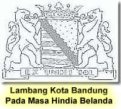
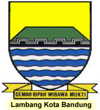
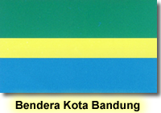

PENGUMUMAN
Pemkot Bandung Raih Penghargaan Top 10 Pengelolaan Pengaduan Pelayanan Publik 2018 Sambut HKN, Dinkes Kota Bandung Tingkatkan Pelayanan Laboratorium di Puskesmas HASIL SELEKSI ADMINISTRASI PENERIMAAN CALON PEGAWAI NEGERI SIPIL DI LINGKUNGAN PEMERINTAH KOTA BANDUNG FORMASI TAHUN 2018 PENGUMUMAN JADWAL TES ONLINE PROFESI TENAGA AHLI (KONTRAK APBD) DAN KONTRAK BLUD UPT DI LINGKUNGAN DINAS KESEHATAN KOTA BANDUNG PERUBAHAN WAKTU PENDAFTARAN PENERIMAAN CALON PEGAWAI NEGERI SIPIL DI LINGKUNGAN PEMERINTAH KOTA BANDUNG FORMASI TAHUN 2018Profil Kota
Lambang Dan Bendera
LAMBANG Lambang kota Bandung ditetapkan dengan Peraturan Daerah Kota besar Bandung tahun 1953, tertanggal 8 Juni 1953, yang diijinkan dengan Keputusan Presiden tertanggal 28 april 1953 No. 104 dan diundangkan dalam Berita Propinsi Jawa Barat tertanggal 28 Agustus 1954 No. 4 lampiran No. 6 Lambang tersebut bertokoh PERISAI yang berbentuk JANTUNG. Perisai tersebut terbagi dalam dua bagian oleh sebuah BALOK- LINTANG mendatar bertajuk empat buah, yang berwarna HITAM dengan pelisir berwarna PUTIH (PERAK) pada pinggir sebelah atasnya: 
1. Bagian atas latar KUNING (EMAS) dengan lukisan sebuah GUNUNG berwaarna HIJAU yang bertumpu pada blok-lintang.
2. Bagian bawah latar PUTIH (PERAK) dengan lukisan empat bidang jalur mendatar berombak yang berwarna BIRU. Di bawah perisai itu terlukis sehelai PITA berwarna KUNING (EMAS) yang melambai pada kedua ujungnya, Pada pita itu tertulis dengan huruf-huruf besar latin berwarna HITAM amsal dalam bahasa KAWI, yang berbunyi GEMAH RIPAH WIBAWA MUKTI. Sebagai tokoh lambang itu diambil bentuk perisai atau tameng, yang dikenal kebudayaan dan peradaban sebagai senjata dalam perjuangan untuk mencapai sesuatu tujuandengan melindungi diri. Perkakas perjuangan yang demikian itu dijadikan lambang yang mempunyai arti menahan segala mara bahaya dan kesukaran.
KUNING (EMAS), berarti : kesejahteraan, keluhungan.
HITAM (SABEL), berarti : kokoh, tegak, kuat.
HIJAU (SINOPEL), berarti : kemakmuran sejuk
PUTIH (PERAK), berarti : kesucian
BIRU (AZUUR), berarti : kesetiaan
Gemah ripah wibawa mukti, berarti : tanah subur rakyat makmur
BENDERA
Bendera yang digunakan oleh Kotamadya Bandung adalah berdasarkan Surat Keputusan Dewan Perwakilan Rakyat Daerah Sementara Kota Besar Bandung tanggal 8 Juni 1953 No. 9938/53.

Bentuk bendera tersebut adalah seperti yang tercantum pada diktum Keputusan tersebut diatas sebagai berikut :
1. Bendera yang dipergunakan oleh Kota Besar Bandung dan tiga bidang jalur mendatar, masing - masing berturut-turut dari atas kebawah berwarna HIJAU, KUNING dan BIRU
2. Perbandingan-perbandingan antara lebarnya dan jalur-jalur tersebut dibawah huruf urutan dari atas kebawah adalah 2:1:2
3. Perbandingan antara panjang dan lebarnya berbeda itu 7:5
Sekilas Sejarah Kota Bandung
Kota Badung tidak berdiri bersamaan dengan pembentukan Kabupaten Bandung. Kota itu dibangun dengan tenggang waktu sangat jauh setelah Kabupaten Bandung berdiri. Kabupaten Bandung dibentuk pada sekitar pertengahan abad ke-17 Masehi, dengan Bupati pertama tumenggung Wiraangunangun. Beliau memerintah Kabupaten bandung hingga tahun 1681.
Semula Kabupaten Bandung beribukota di Krapyak (sekarang Dayeuhkolot) kira-kira 11 kilometer ke arah Selatan dari pusat kota Bandung sekarang. Ketika kabupaten Bandung dipimpin oleh bupati ke-6, yakni R.A Wiranatakusumah II (1794-1829) yang dijuluki "Dalem Kaum I", kekuasaan di Nusantara beralih dari Kompeni ke Pemerintahan Hindia Belanda, dengan gubernur jenderal pertama Herman Willem Daendels (1808-1811).
Untuk kelancaran menjalankan tugasnya di Pulau Jawa, Daendels membangun Jalan Raya Pos (Groote Postweg) dari Anyer di ujung barat Jawa Barat ke Panarukan di ujung timur Jawa timur (kira-kira 1000 km). Pembangunan jalan raya itu dilakukan oleh rakyat pribumi di bawah pimpinan bupati daerah masing-masing.
Di daerah Bandung khususnya dan daerah Priangan umumnya, Jalan Raya pos mulai dibangun pertengahan tahun 1808, dengan memperbaiki dan memperlebar jalan yang telah ada. Di daerah Bandung sekarang, jalan raya itu adalah Jalan Jenderal Sudirman - Jalan Asia Afrika - Jalan A. Yani, berlanjut ke Sumedang dan seterusnya. Untuk kelancaran pembangunan jalan raya, dan agar pejabat pemerintah kolonial mudah mendatangi kantor bupati, Daendels melalui surat tanggal 25 Mei 1810 meminta Bupati Bandung dan Bupati Parakanmuncang untuk memindahkan ibukota kabupaten, masing-masing ke daerah Cikapundung dan Andawadak (Tanjungsari), mendekati Jalan Raya Pos.
Rupanya Daendels tidak mengetahui, bahwa jauh sebelum surat itu keluar, bupati Bandung sudah merencanakan untuk memindahkan ibukota Kabupaten Bandung, bahkan telah menemukan tempat yang cukup baik dan strategis bagi pusat pemerintahan. Tempat yang dipilih adalah lahan kosong berupa hutan, terletak di tepi barat Sungai Cikapundung, tepi selatan Jalan Raya Pos yang sedang dibangun (pusat kota Bandung sekarang). Alasan pemindahan ibukota itu antara lain, Krapyak tidak strategis sebagai ibukota pemerintahan, karena terletak di sisi selatan daerah Bandung dan sering dilanda banjir bila musim hujan.
Sekitar akhir tahun 1808/awal tahun 1809, bupati beserta sejumlah rakyatnya pindah dari Krapyak mendekali lahan bakal ibukota baru. Mula-mula bupati tinggal di Cikalintu (daerah Cipaganti), kemudian pindah ke Balubur Hilir, selanjutnya pindah lagi ke Kampur Bogor (Kebon Kawung, pada lahan Gedung Pakuan sekarang).
Tidak diketahui secara pasti, berapa lama Kota Bandung dibangun. Akan tetapi, kota itu dibangun bukan atas prakarsa Daendels, melainkan atas prakarsa Bupati Bandung, bahkan pembangunan kota itu langsung dipimpin oleh bupati. Dengan kata lain, Bupati R. A. Wiranatakusumah II adalah pendiri (the founding father) kota Bandung. Kota Bandung diresmikan sebagai ibukota baru Kabupaten Bandung dengan surat keputusan tanggal 25 September 1810.